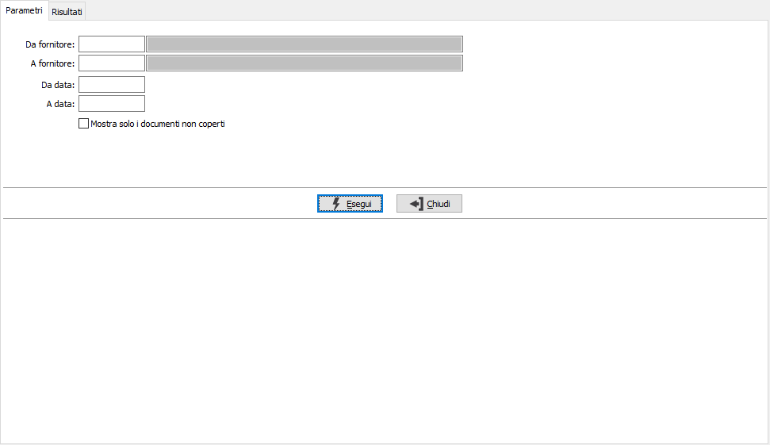
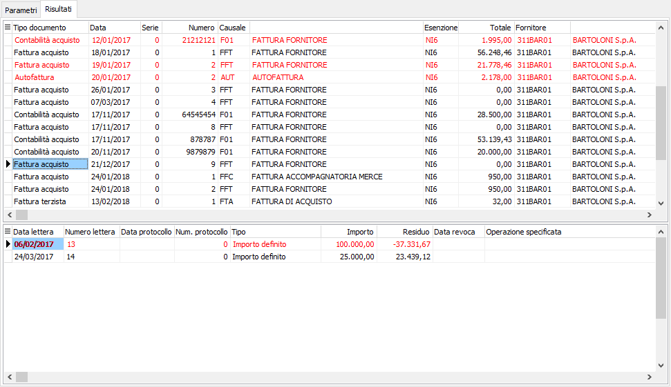

Controllo copertura fatture fornitori
La funzione non è attiva se non è gestita l'assegnazione multipla delle lettere di intento.
La funzione consente di visualizzare i documenti (fatture, note di credito, movimenti contabili) con codice esenzione (aliquota Iva in cui è indicato “Tipo utilizzo plafond” diverso da “Nessun utilizzo”), sia assegnati che non assegnati a dichiarazione intento.
Nei parametri è possibile specificare un range di fornitori, oppure un periodo di date relative ai documenti.
L’analisi eseguita con il parametro “Mostra solo i documenti non coperti” può essere eseguita per evidenziare eventuali documenti a cui non è stata assegnata la dichiarazione o a cui è stata assegnata la dichiarazione ma questa non copre totalmente la fattura. Attivando tale flag vengono visualizzati i documenti con codice esenzione associato ma ai quali non è assegnata una lettera oppure è assegnata la lettera ma l’importo assegnato a questa è inferiore all’importo del documento.
La pagina dei Risultati riporta nella griglia superiore i documenti e nella griglia inferiore le eventuali dichiarazioni intento associate, vengono evidenziate in rosso se il totale del documento è superiore all'importo definito sulla lettera o se il documento risulta non associato ad alcuna lettera.

E’ possibile accedere alla manutenzione della dichiarazione e alla manutenzione del documento tramite il doppio clic del mouse, posizionati sulla dichiarazione o sul documento.
Tramite i pulsanti Anteprima e Stampa della toolbar o gli appositi tasti funzione è possibile stampare i dati visualizzati a video.